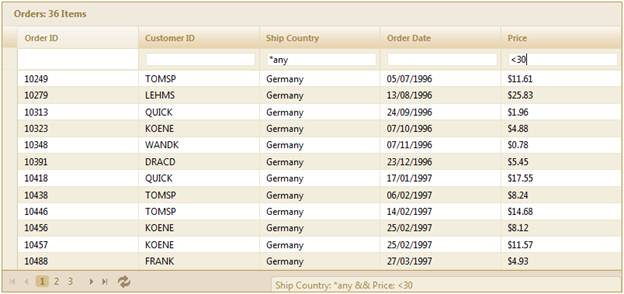

1. Create a model in the application.
2. Create a strongly typed view.
3. In the view you can use its Model property in Datasource() to bind the data source.
4. To enable the filter bar filtering mode, set the FilterMode enum property to FilterBar. The filter bar status message can be viewed by enabling the property ShowFilterStatusMessage. The filter bar mode can be set to Immediate or OnEnter by setting the enum property FilterBarMode.
The ASPX and Razor codes given below will help you customize the grid:
|
[ASPX]
<%=Html.Syncfusion().Grid<Order>("Grid1") .Datasource(Model) .Caption("Orders") .Column(column => { column.Add(p => p.OrderID).HeaderText("Order ID").AllowFilter(false); column.Add(p => p.CustomerID).HeaderText("Customer ID"); column.Add(p => p.ShipCountry).HeaderText("Ship Country"); column.Add(p => p.OrderDate).HeaderText("Order Date").Format("{OrderDate:dd/MM/yyyy}"); column.Add(p => p.Freight).HeaderText("Price").Format("{0:c}");
})
.EnablePaging() .EnableSorting() .AutoFormat(Skins.Sandune).EnableGrouping() .Filtering(filter => { filter.AllowFiltering(true); // Specifies the filter mode. filter.FilterMode(FilterMode.FilterBar); // Specifies the filter bar mode. filter.FilterBarMode(FilterBarMode.Immediate); // Specifies whether the filter status message will be shown. filter.ShowFilterStatusMessage(true); })
%>
|
|
[Razor]
@{Html.Syncfusion().Grid<Order>("Grid1") .Datasource(Model) .Caption("Orders") .Column(column => { column.Add(p => p.OrderID).HeaderText("Order ID").AllowFilter(false); column.Add(p => p.CustomerID).HeaderText("Customer ID"); column.Add(p => p.ShipCountry).HeaderText("Ship Country"); column.Add(p => p.OrderDate).HeaderText("Order Date").Format("{OrderDate:dd/MM/yyyy}"); column.Add(p => p.Freight).HeaderText("Price").Format("{0:c}");
})
.EnablePaging() .EnableSorting() .AutoFormat(Skins.Sandune).EnableGrouping() .Filtering(filter => { filter.AllowFiltering(true); // Specifies the filter mode. filter.FilterMode(FilterMode.FilterBar); // Specifies the filter bar mode. filter.FilterBarMode(FilterBarMode.Immediate); // Specifies whether the filter status message will be shown. filter.ShowFilterStatusMessage(true); })
.Render();
}
|
5. Set its data source and render the view.
|
Controller
/// <summary> /// Used for rendering the grid initially. /// </summary> /// <returns>View page; it displays the grid.</returns> public ActionResult Index() { IEnumerable data = new NorthwindDataContext().Orders.Take(200).ToList(); return View(data); }
|
6. In order to work with filter actions, create a Post method for Index actions and bind the data source to the grid as shown in the following code:
|
Controller
<summary> /// Paging, editing, and filtering requests are mapped to this method. This method invokes the HtmlActionResult /// from the grid and the required response is generated. /// </summary> [AcceptVerbs(HttpVerbs.Post)] public ActionResult Index(PagingParams args) { IEnumerable data = new NorthwindDataContext().Orders.Take(200).ToList(); return data.GridActions<Order>();
}
|
7. Run the application and use the filtering tokens in the filter bar to filter the data table. The valid tokens are listed in the filter token table.
The following image is an output sample of a filter bar implemented in a grid:

Figure 127: Implementation of Filter Bar through GridBuilder